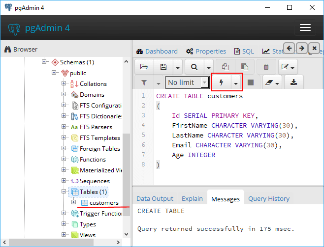

Вернуться на главную страницу →
Вернуться на главную страницу →
Создание и удаление таблиц
Для создания таблиц применяется команда CREATE TABLE, после которой указывается название таблицы. Также с этой командой можно использовать ряд операторов, которые определяют столбцы таблицы и их атрибуты. Общий синтаксис создания таблицы выглядит следующим образом:
1 CREATE TABLE название_таблицы
2 (название_столбца1 тип_данных атрибуты_столбца1,
3 название_столбца2 тип_данных атрибуты_столбца2,
4 ................................................
5 название_столбцаN тип_данных атрибуты_столбцаN,
6 атрибуты_таблицы
7 );
После названия таблицы в скобках перечисляется спецификация для всех столбцов. Причем для каждого столбца надо указывается название и тип данных, который он будет представлять. Тип данных определяет, какие данные (числа, строки и т.д.) может содержать столбец.
Например, создадим таблицу в базе данных через pgAdmin. Для этого вначале выберем в pgAdmin целевую базу данных, нажмем на нее правой кнопкой мыши и в контекстном меню выберем пункт Query Tool...:

После этого откроется поле для ввода кода на SQL. Причем таблица будет создаваться именно для той базы данных, для которой мы откровыем это поле для ввода SQL.
Далее в открывшееся в центральной части программы поле введем следующий набор выражений:
1 CREATE TABLE customers
2 (
3 Id SERIALPRIMARY KEY,
4 FirstNameCHARACTER VARYING(30),
5 LastNameCHARACTER VARYING(30),
6 EmailCHARACTER VARYING(30),
7 AgeINTEGER
7 );
В данном случае в таблице Customers определяются пять столбцов: Id, FirstName, LastName, Age, Email. Первый столбец - Id представляет идентификатор клиента, он служит первичным ключом и поэтому имеет тип SERIAL. Фактически данный столбец будет хранить числовое значение 1, 2, 3 и т.д., которое для каждой новой строки будет автоматически увеличиваться на единицу.
Следующие три столбца представляют имя, фамилию клиента и его электронный адрес и имеют тип CHARACTER VARYING(30), то есть представляют строку длиной не более 30 символов.
Последний столбец - Age представляет возраст пользователя и имеет тип INTEGER, то есть хранит числа.
И после выполнения этой команды в выбранную базу данных будет добавлена таблица customers.
Удаление таблиц
Для удаления таблиц используется команда DROP TABLE, которая имеет следующий синтаксис:
1 DROP TABLE table1 [, table2, ...];
Например, удаление таблицы customers:
1 DROP TABLE customers;